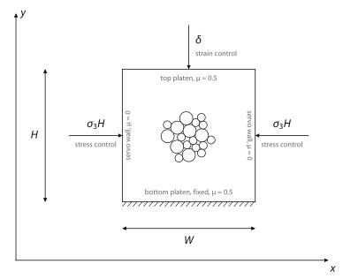
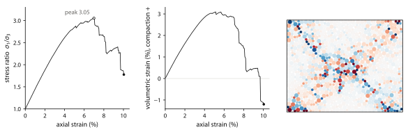

Setup
pip install numpy scipy numba matplotlib
import numpy as np
from numba import njit
from scipy.spatial import cKDTree
import matplotlib.pyplot as plt
from matplotlib.collections import EllipseCollectionThe Kishino solver
qsDEM is a quasi-static model for finding the force equilibrium in an assembly of contacting grains, based on Yuji Kishino's 1988 paper. Each grain in two dimensions carries three degrees of freedom, two translations and one rotation, so the quantity being solved for is a generalized displacement and the quantity being driven to zero is a generalized force.
Δu = (Δx, Δy, Δθ)T , f = (Fx, Fy, M)T (1)The stiffness matrix is assembled one contact at a time. A contact c on grain i, with unit normal n, unit tangent t and lever arm Ri, relates the grain's generalized displacement to the relative displacement at that contact through a matrix Bc whose normal row is (nx, ny, 0) and whose tangential row is (tx, ty, Ri). With normal and tangential contact stiffnesses kn and kt, the grain's stiffness is the sum over its current contacts.
S = ∑c BcT kc Bc (2)A grain cannot slide against a contact without also feeling a moment, and cannot spin without shearing its contacts. When a grain is subjected to an unbalanced generalized force, it must move to reach equilibrium. If we assume the grain's neighbors are temporarily frozen in place, one step brings its net force and moment to zero.
Δu = S−1 f (3)In the simulation, all grains are moving simultaneously. If every grain took its full ideal step at once, they would overshoot their targets and artificially overlap. To maintain stability, the movement is scaled by a relaxation factor α ∈ (0, 1) to take a safe, partial step.
u(k+1) = u(k) + α S−1 f(k) (4)Because thousands of interacting grains are adjusting their positions at the same time (in qsDEM, computed in parallel on the GPU), this update step (k) must be repeated iteratively until the entire assembly reaches a global force balance. The subsections below write (1) to (4) as code.
Contact law
Two grains touch when they overlap, δ = Ri + Rj − d > 0. The normal force is a linear spring. The tangential force is a spring on the sliding Δut accumulated since the load step began, starting from the value ft0 it had then, and it is capped by Coulomb friction.
fn = kn δ , ft = ft0 + kt Δut , |ft| ≤ μ fn (5)add_contact applies (5) to one contact of grain i. It adds the
contact's force and moment to f and its term
BcT kc Bc
of (2), with kc = diag(kn, kt),
to S.
KN, KT = 1.0e6, 0.5e6 # normal and tangential contact stiffness
REG = 0.05 * KN # diagonal term that keeps each local stiffness invertible
@njit
def add_contact(i, nx, ny, ov, dut, ft0, mu, R, F, S):
# nx, ny: unit normal from the center of grain i towards the contact
# ov: overlap, dut: sliding of the partner since the step began
# ft0: tangential force when the step began
tx, ty = -ny, nx # unit tangent
pn = KN * ov # normal force
ft = ft0 + KT * dut # tangential force
ft = min(max(ft, -mu * pn), mu * pn)
F[i, 0] += -pn * nx + ft * tx
F[i, 1] += -pn * ny + ft * ty
F[i, 2] += R[i] * ft # moment about the center
kt = KT if mu > 0.0 else 0.0
S[i, 0, 0] += KN * nx * nx + kt * tx * tx
S[i, 0, 1] += KN * nx * ny + kt * tx * ty
S[i, 1, 1] += KN * ny * ny + kt * ty * ty
S[i, 0, 2] += kt * R[i] * tx
S[i, 1, 2] += kt * R[i] * ty
S[i, 2, 2] += kt * R[i] * R[i]
return ftREG adds kn/20 to the diagonal of every S. It
keeps S invertible for a grain with a single contact, which is free to roll, and
for a grain with none. It changes how far a grain steps, not where the iteration ends,
because the answer is f = 0 whatever S is. S also leaves out
a small geometric term from the turning of the contact normal, of order
fn/d.
Forces and stiffness
One pass over the contacts gives every grain its unbalanced force and its stiffness. Each grain-grain contact is added twice, once to each grain with the other held fixed. The reaction on j is the same call with the normal reversed. The walls are neighbors that never move. The side walls are frictionless in this test, so their contacts carry no tangential force and add no tangential stiffness.
# unit normal from a grain towards each wall: left, right, bottom, top
WALL_N = np.array([[-1.0, 0.0], [1.0, 0.0], [0.0, -1.0], [0.0, 1.0]])
@njit
def forces_and_stiffness(pos, rot, pos0, rot0, R, ci, cj, ft0, ftw0, walls, mu, muw):
N = len(R)
F = np.zeros((N, 3))
S = np.zeros((N, 3, 3))
for i in range(N):
S[i, 0, 0] = REG
S[i, 1, 1] = REG
S[i, 2, 2] = REG * R[i] ** 2
du, dth = pos - pos0, rot - rot0 # motion since the step began
ft, ftw = np.zeros(len(ci)), np.zeros((N, 4)) # tangential forces
Fw, nw = np.zeros(4), np.zeros(4) # force on each wall, grains touching it
pn_sum, n_touch = 0.0, 0
for c in range(len(ci)):
i, j = ci[c], cj[c]
dx, dy = pos[j, 0] - pos[i, 0], pos[j, 1] - pos[i, 1]
dist = np.sqrt(dx * dx + dy * dy)
ov = R[i] + R[j] - dist
if ov <= 0.0:
continue
nx, ny = dx / dist, dy / dist # normal from i to j
dut = ((du[j, 0] - du[i, 0]) * -ny + (du[j, 1] - du[i, 1]) * nx
- R[i] * dth[i] - R[j] * dth[j])
ft[c] = add_contact(i, nx, ny, ov, dut, ft0[c], mu, R, F, S)
add_contact(j, -nx, -ny, ov, dut, ft0[c], mu, R, F, S)
pn_sum += KN * ov
n_touch += 1
for i in range(N):
for k in range(4):
a = k // 2 # x for the side walls, y for the platens
ov = R[i] + WALL_N[k, a] * (pos[i, a] - walls[k])
if ov <= 0.0:
continue
nx, ny = WALL_N[k, 0], WALL_N[k, 1]
dut = du[i, 0] * ny - du[i, 1] * nx - R[i] * dth[i]
ftw[i, k] = add_contact(i, nx, ny, ov, dut, ftw0[i, k], muw[k], R, F, S)
Fw[k] += KN * ov
nw[k] += 1.0
return F, S, ft, ftw, Fw, nw, pn_sum / max(n_touch, 1)The iteration
kishino applies the update (4) to every grain at once. The factor
α halves whenever the squared residual rises by more than
5% in one iteration, and otherwise grows by 5%, within 0.02 to 0.75. No grain steps more
than a fifth of its radius in one iteration.
A stress-controlled wall is handled the same way, as in Kishino (1988). It is one more block, with one degree of freedom. Its unbalanced force is the difference between the force it carries, Fw, and its target σL. Its stiffness with the grains held fixed is kn times the number of grains touching it, nw.
Δw = α (Fw − σL) / (kn nw) (6)The iteration stops when three residuals are all below tol =
10−3. The first is fr, the RMS unbalanced force and moment
per grain over the mean contact force. The second is the error of each servo wall. The
third is the net force on the whole specimen over the load it carries. The third check is
not redundant. Residuals that are small on every grain but point the same way add up,
and without the check the top and bottom platens in this test disagree by 1 to 2%.
@njit
def solve3(S, f):
a, b, c, d, e, g = S[0, 0], S[0, 1], S[0, 2], S[1, 1], S[1, 2], S[2, 2]
A, B, C = d * g - e * e, c * e - b * g, b * e - c * d
D, E, G = a * g - c * c, b * c - a * e, a * d - b * b
det = a * A + b * B + c * C
return ((A * f[0] + B * f[1] + C * f[2]) / det,
(B * f[0] + D * f[1] + E * f[2]) / det,
(C * f[0] + E * f[1] + G * f[2]) / det)
OUTWARD = np.array([-1.0, 1.0, -1.0, 1.0]) # outward direction of each wall
WALL_CAP = 0.02 # largest wall move in one iteration
@njit
def kishino(pos, rot, pos0, rot0, R, ci, cj, ft0, ftw0, walls, sigma, mu, muw,
alpha, n_iter, tol, pos_list, skin):
N = len(R)
prev = np.inf
fr = werr = net = np.inf
for it in range(n_iter):
F, S, ft, ftw, Fw, nw, mean_pn = forces_and_stiffness(
pos, rot, pos0, rot0, R, ci, cj, ft0, ftw0, walls, mu, muw)
r2, sx, sy = 0.0, 0.0, 0.0
for i in range(N):
r2 += F[i, 0] ** 2 + F[i, 1] ** 2 + (F[i, 2] / R[i]) ** 2
sx += F[i, 0]
sy += F[i, 1]
fr = np.sqrt(r2 / N) / max(mean_pn, 1e-12)
H, W = walls[3] - walls[2], walls[1] - walls[0]
target = sigma * np.array([H, H, W, W]) # force each servo wall should carry
werr = 0.0
for k in range(4):
if sigma[k] > 0.0:
werr = max(werr, abs(Fw[k] / target[k] - 1.0))
net = max(abs(sx) / max(Fw[0], Fw[1], 1e-12), # net force over the load
abs(sy) / max(Fw[2], Fw[3], 1e-12))
if fr < tol and werr < tol and net < tol:
return it, fr, werr, net, alpha, 1
alpha = max(0.02, 0.5 * alpha) if r2 > 1.05 * prev else min(0.75, 1.05 * alpha)
prev = r2
moved = 0.0
for i in range(N):
dx, dy, dw = solve3(S[i], F[i])
step = np.sqrt(dx * dx + dy * dy)
if step > 0.2 * R[i]:
dx, dy = dx * 0.2 * R[i] / step, dy * 0.2 * R[i] / step
pos[i, 0] += alpha * dx
pos[i, 1] += alpha * dy
rot[i] += alpha * min(max(dw, -0.05), 0.05)
moved = max(moved, (pos[i, 0] - pos_list[i, 0]) ** 2
+ (pos[i, 1] - pos_list[i, 1]) ** 2)
for k in range(4):
if sigma[k] > 0.0:
u = alpha * (Fw[k] - target[k]) / (KN * max(nw[k], 1.0))
walls[k] += OUTWARD[k] * min(max(u, -WALL_CAP), WALL_CAP)
if moved > (0.5 * skin) ** 2:
return it + 1, fr, werr, net, alpha, 2
return n_iter, fr, werr, net, alpha, 0A load step
Friction makes the result depend on the loading path, so the history is kept one load step at a time. A step begins by recording the positions and rotations, and it starts from the tangential forces committed at the end of the previous step. Every sliding displacement Δut in the step is measured from that start. The tangential forces are then a function of the current positions only, so pausing the iteration to rebuild the contact list changes nothing. Once the step has converged, its tangential forces are committed as the history of the next one.
The contact list holds every pair with a gap below SKIN. A new contact
cannot form until some grain has moved SKIN/2, so kishino
returns at that point and relax rebuilds the list. Each pair keeps its
committed force through the rebuild, matched by its (i, j) key.
SKIN = 0.3 # pairs with a smaller gap are contact candidates
def contact_list(pos, R):
pairs = cKDTree(pos).query_pairs(2.0 * R.max() + SKIN, output_type='ndarray')
i, j = pairs.min(axis=1), pairs.max(axis=1)
near = np.hypot(*(pos[j] - pos[i]).T) - R[i] - R[j] < SKIN
i, j = i[near], j[near]
order = np.lexsort((j, i))
return i[order], j[order]
class Specimen:
def __init__(self, pos, R, walls):
self.pos, self.R, self.walls = pos, R, walls
self.rot = np.zeros(len(R))
self.ci = self.cj = np.zeros(0, dtype=np.int64)
self.ft0 = np.zeros(0) # committed tangential force of each pair
self.ftw0 = np.zeros((len(R), 4)) # ... and of each grain-wall contact
self.alpha = 0.2
self.relist()
def relist(self):
ci, cj = contact_list(self.pos, self.R)
old, new = self.ci * len(self.R) + self.cj, ci * len(self.R) + cj
ft0 = np.zeros(len(ci))
if len(old):
k = np.minimum(np.searchsorted(old, new), len(old) - 1)
hit = old[k] == new
ft0[hit] = self.ft0[k[hit]]
self.ci, self.cj, self.ft0, self.pos_list = ci, cj, ft0, self.pos.copy()
def relax(sp, sigma, mu, muw, tol=1e-3, max_iter=500_000):
pos0, rot0 = sp.pos.copy(), sp.rot.copy() # start of the step
done, status = 0, 0
while status != 1 and done < max_iter:
it, fr, werr, net, sp.alpha, status = kishino(
sp.pos, sp.rot, pos0, rot0, sp.R, sp.ci, sp.cj, sp.ft0, sp.ftw0, sp.walls,
sigma, mu, muw, sp.alpha, max_iter - done, tol, sp.pos_list, SKIN)
done += it
if status == 2:
sp.relist()
F, S, ft, ftw, Fw, nw, mean_pn = forces_and_stiffness(
sp.pos, sp.rot, pos0, rot0, sp.R, sp.ci, sp.cj, sp.ft0, sp.ftw0, sp.walls,
mu, muw)
sp.ft0, sp.ftw0 = ft, ftw
return dict(iters=done, converged=status == 1, fr=fr, wall_force=Fw)The biaxial test
The solver of the previous section and the test below make up one script, biaxial.py. The same cells as a notebook are in biaxial.ipynb.
Apparatus
The biaxial apparatus follows Figure 1. The bottom platen is fixed, and the top platen is driven down by δ every step, which is strain control. Both side walls are servo walls, each held at σ3H like the membrane of a triaxial cell. The platens are rough, and the grains have the same friction between them, μ = 0.5. The side walls are frictionless. Stresses are boundary tractions. σ1 is the mean platen force over the width W, and σ3 the mean side-wall force over the height H.

Specimen
1024 discs start on a loose grid. Their radii are 0.5 and 0.3, with (1 + √5)/4 large grains for every small one, the mixture of Maloney and Lemaître (2006). The box is squeezed isotropically to σ0 without friction, with the left and bottom walls fixed and the right and top walls servo-controlled. Preparing without friction gives the densest packing the discs can reach at that pressure. Friction is switched on afterwards, with every tangential force at zero.
Stresses are forces per unit length. The number that matters is σ0/kn = 0.02, which sets how soft the contacts are. At this pressure the overlaps average 1.5% of the sum of the two radii.
SIGMA0 = 2.0e4 # confining stress, force per unit length (p/kn = 0.02)
def make_specimen(n_side=32, seed=0):
rng = np.random.default_rng(seed)
N = n_side * n_side
r = (1.0 + np.sqrt(5.0)) / 4.0 # large grains per small grain
R = np.where(rng.permutation(N) < round(N * r / (1.0 + r)), 0.5, 0.3)
x = (np.arange(n_side) + 0.5) * 1.05
X, Y = np.meshgrid(x, x)
pos = np.column_stack([X.ravel(), Y.ravel()]) + rng.uniform(-0.02, 0.02, (N, 2))
return Specimen(pos, R, np.array([0.0, 1.05 * n_side, 0.0, 1.05 * n_side]))
sp = make_specimen()
out = relax(sp, np.array([0.0, SIGMA0, 0.0, SIGMA0]), 0.0, np.zeros(4))
W0, H0 = sp.walls[1] - sp.walls[0], sp.walls[3] - sp.walls[2]
phi = np.pi * np.sum(sp.R ** 2) / (W0 * H0)
print(f"{len(sp.R)} grains in {W0:.2f} x {H0:.2f}, packing fraction {phi:.3f}, "
f"{out['iters']} iterations")1024 grains in 24.33 x 24.30, packing fraction 0.879, 67966 iterations
Compression
Each step moves the top platen down by δ = 0.01, 0.04% of the height, and relaxes the specimen with both side walls at σ3 = σ0. 244 steps reach 10% axial strain. Axial strain is the relative shortening of the specimen, and volumetric strain the relative loss of its area, positive in compaction.
MU = 0.5 # grain-grain friction
MU_WALL = np.array([0.0, 0.0, 0.5, 0.5]) # smooth side walls, rough platens
SIGMA3 = SIGMA0 # confining stress on the side walls
DELTA = 0.01 # top platen advance per step
curve = []
n_steps = int(np.ceil(0.10 * H0 / DELTA)) # steps to 10% axial strain
for step in range(1, n_steps + 1):
sp.walls[3] -= DELTA
out = relax(sp, np.array([SIGMA3, SIGMA3, 0.0, 0.0]), MU, MU_WALL)
W, H = sp.walls[1] - sp.walls[0], sp.walls[3] - sp.walls[2]
FL, FR, FB, FT = out['wall_force']
s1, s3 = 0.5 * (FB + FT) / W, 0.5 * (FL + FR) / H # platen and side tractions
curve.append((1 - H / H0, s1 / s3, 1 - W * H / (W0 * H0)))
if step % 50 == 0:
print(f"step {step}/{n_steps}: axial strain {curve[-1][0]:.2%}, "
f"s1/s3 {s1 / s3:.2f}, {out['iters']} iterations")
curve = np.array(curve) # axial strain, stress ratio, volumetric strainstep 50/244: axial strain 2.06%, s1/s3 1.90, 2041 iterations step 100/244: axial strain 4.11%, s1/s3 2.65, 2829 iterations step 150/244: axial strain 6.17%, s1/s3 2.98, 6856 iterations step 200/244: axial strain 8.23%, s1/s3 2.27, 43407 iterations
Results
ea, ratio, ev = curve[:, 0] * 100, curve[:, 1], curve[:, 2] * 100
k = np.argmax(ratio)
phi_peak = np.degrees(np.arcsin((ratio[k] - 1) / (ratio[k] + 1)))
print(f"peak s1/s3 = {ratio[k]:.2f} at {ea[k]:.1f}% axial strain "
f"(friction angle {phi_peak:.0f} degrees)")
fig, ax = plt.subplots(1, 3, figsize=(12, 3.8), layout='constrained')
ax[0].plot(ea, ratio, lw=0.8, color='k')
ax[0].set(xlabel='axial strain (%)', ylabel=r'stress ratio $\sigma_1/\sigma_3$')
ax[1].plot(ea, ev, lw=0.8, color='k')
ax[1].set(xlabel='axial strain (%)', ylabel='volumetric strain (%), compaction +')
lim = np.percentile(np.abs(sp.rot), 98)
discs = EllipseCollection(2 * sp.R, 2 * sp.R, np.zeros(len(sp.R)), units='x',
offsets=sp.pos, offset_transform=ax[2].transData,
cmap='RdBu_r', clim=(-lim, lim), array=sp.rot)
ax[2].add_collection(discs)
ax[2].set(xlim=sp.walls[:2], ylim=sp.walls[2:], aspect='equal', title='grain rotation')
plt.show()peak s1/s3 = 3.05 at 7.0% axial strain (friction angle 30 degrees)

The peak gives a friction angle φ = arcsin[(σ1 − σ3)/(σ1 + σ3)] of 30° for grains with μ = 0.5. The specimen compacts at first, because the contacts are soft at this pressure, and then dilates as two conjugate shear bands form. The grain rotations show them as an X. After the peak the stress falls in discrete drops. Each drop is a sudden rearrangement of the bands.
One million grains
The same test, run on a GPU with one million discs at four grain friction angles. You can see the conjugate shear bands.
SPH mantle
In qsDEM, we model the viscous mantle with smoothed particle hydrodynamics (SPH). SPH was developed for compressible astrophysical flows, and Morris, Fox and Zhu (1997) adapted it to viscous flow at low Reynolds number, which is the regime of the mantle. We use their formulation with one change. Because qsDEM has no time, the viscosity is replaced by a time-independent drag parameter.
An SPH particle carries a fixed amount of mass and moves with the flow, but unlike a DEM grain it has no edge. Its mass (m) is spread over a small region around it, densest at the center and fading to nothing at a distance set by the smoothing length (h), following a kernel function (W). Intuitively, an SPH particle is a soft cloud rather than a ball. qsDEM uses the Wendland kernel,
W(r, h)= 7 / (4πh2) (1 − r/2h)4 (1 + 2r/h) ,r < 2h (7)and zero beyond 2h. The density at a particle is the total mass of the particles around it, each weighted by the kernel at its distance,
ρi= ∑j mj W(|ri − rj|, h) (8)so density is a measure of how crowded the neighborhood is. The pressure is set by how much denser the particle is than the fluid at rest (ρ0), with K as the bulk modulus of the fluid,
pi= K (ρi / ρ0 − 1) ,ρi > ρ0 (9)and zero otherwise. The pressure acts on each particle through its gradient, pushing it away from neighbors at higher pressure.
Fi= − ∑j mimj (pi / ρi2 + pj / ρj2) ∇iWij (10)Viscosity is defined as a drag between neighboring particles proportional to their relative velocity (Morris, Fox and Zhu, 1997),
Fi= ∑j ViVj (μi + μj) rij (∂Wij/∂r) / (rij2 + 0.01h2) (vi − vj) (11)where V = m/ρ is the particle volume and μ is the viscosity. In qsDEM there is no time and no velocity. Each loading step advances the wall by a fixed increment and the solver finds the equilibrium, so the relative velocity in (11) is replaced by the relative displacement accumulated within the current step, and the viscosity by a drag parameter. The physics is the same, a drag on the rearrangement of neighbors, but the drag parameter is a force per unit displacement rather than per unit velocity. Recovering a true viscosity from it would require knowing how much real time one loading step stands for, which qsDEM does not define.